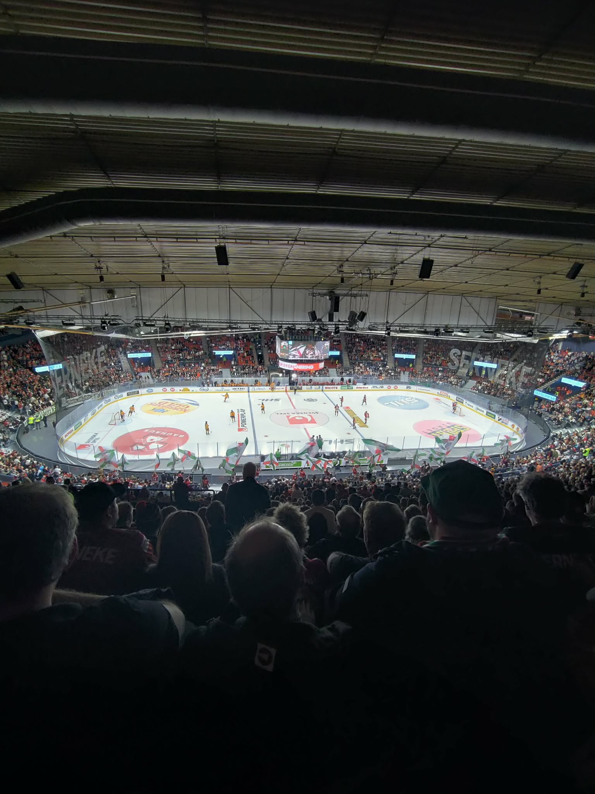
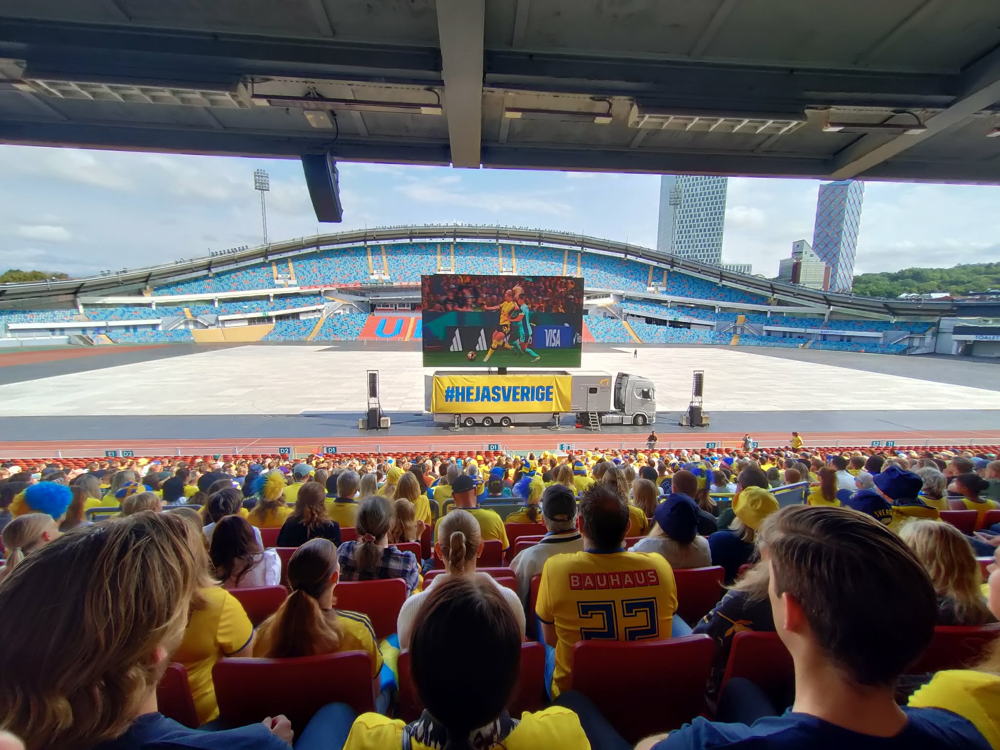
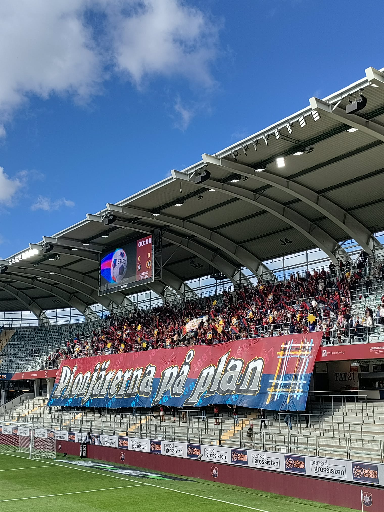

EN AV MINA HOBBYS



ATT VARA EN SUPPORTER
Stor del av mitt liv går åt till att följa mina två lag, Öis i fotboll och Frölunda i hockey. Man kan lugnt säga att det har varit två helt olika världar. Öis som har kravlat för sin överlevnad, åkt upp och ner (mycket ner) i seriesystemen och verkligen varit illa ute några gånger. Men så plötsligt hände något i höstas som jag aldrig hade tänkt kunde hända, laget spelade upp sig i högsta ligan, Allsvenskan. Nytt och ovant för en hyfsat ung Öisare, medans mitt älskade Frölunda till stora delar varit parkerat i toppen av Sveriges hockeyelit länge, med flera SM-guld på 2000-talet.
FLER SPORTER
Mitt sportintresse har utökats genom åren. Jag började med hockeyn men insåg att det vissa dagar var väldigt tomt i kalendern. Det ledde till att jag kollade runt och fann Längdskidor och Skidskytte. Men rätt vad det var så var snön och vintern borta och där satt jag, ledsen och suktade efter mer sport. Så började jag titta mer intensivt på fotboll. Så kom det ett OS och rätt vad det var så var jag uppslukad av både Fridrott och Simning också. Detta har lett till att jag numera har något att se på året runt!
Här nedan finns en tabell på vilka sporter som underhåller mig under årets olika månader.
+ Står för aktiv säsong & - Innebär säsongsuppehåll.
| Jan | Feb | Mars | Apr | Maj | Jun | Jul | Aug | Sep | Okt | Nov | Dec | |
|---|---|---|---|---|---|---|---|---|---|---|---|---|
| Längdskidor | + | + | + | - | - | - | - | - | - | - | + | + |
| Skidskytte | + | + | + | - | - | - | - | - | - | - | + | + |
| Hockey (Frölunda) | + | + | + | + | - | - | - | - | + | + | + | + |
| Hockey (Landslaget) | + | + | + | + | + | - | - | - | + | + | + | + |
| Fotboll (ÖIS) | - | - | - | + | + | + | + | + | + | + | + | - |
| Fotboll (Landslaget) | - | - | + | + | - | + | + | - | + | + | + | - |
| Friidrott | + | + | + | - | + | + | + | + | + | - | - | - |
| Simning | + | + | + | + | + | + | + | - | + | + | + | + |
| Beachvolleyboll | - | - | + | + | + | + | + | + | + | + | + | - |
Om du blir intresserad av att följa ett lag kan jag STARKT rekommendera både ÖIS och Frölunda HC.
Här är spelschemat för alla Örgryte IS Matcher och här är Frölundas Matcher.